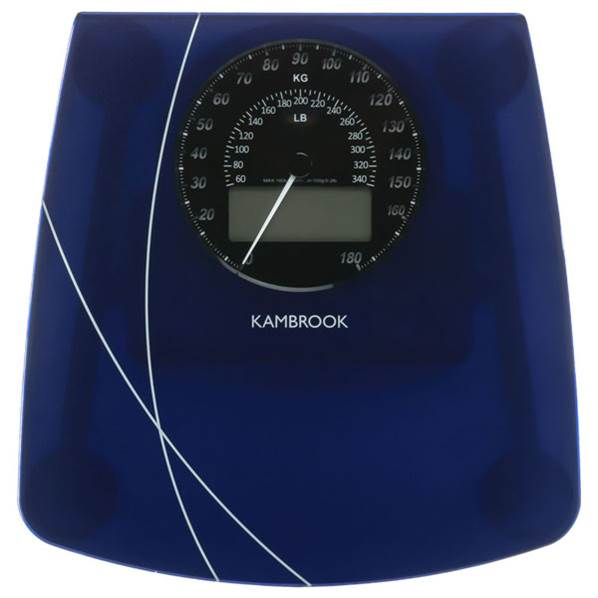
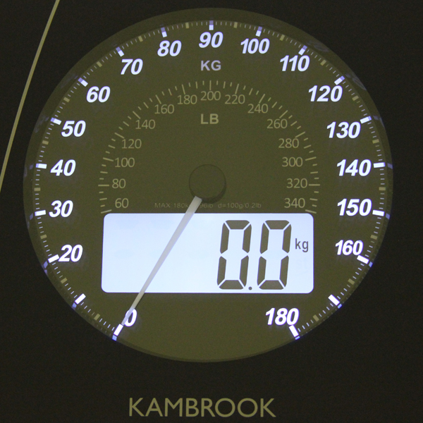
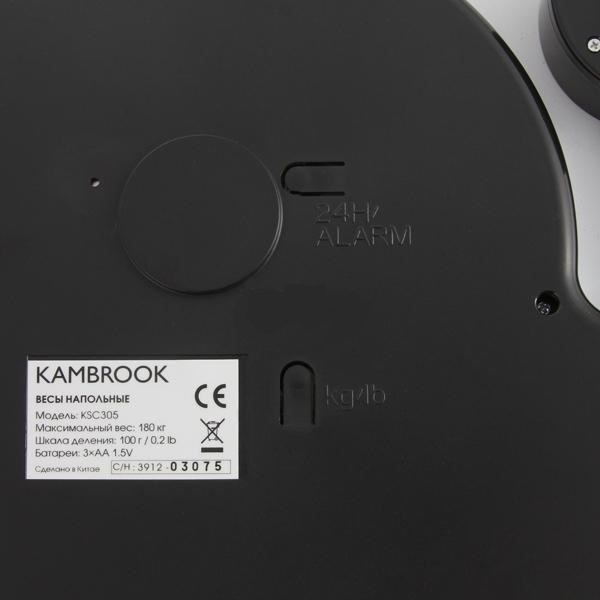
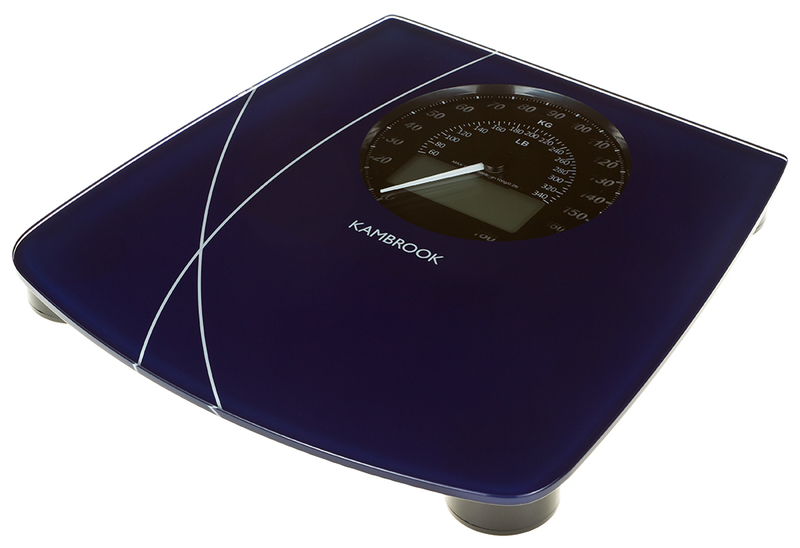

Весы напольные KSС305

Максимальный вес 180 кг.
2 единицы измерения веса (кг/фунты).
Автоматическое включение/выключение.
Подсветка дисплея.
5 датчиков высокой точности.
Напоминание о повторном взвешивании через 24 часа.
Индикатор низкого заряда батареи
2 единицы измерения веса (кг/фунты).
Весы по умолчанию настроены на единицу измерения «килограммы». На тыльной стороне весов находится кнопка переключения единицы веса, при помощи которой вы можете выбрать в качестве единицы измерения kg — килограммы и st/lb — стоуны/фунты. 2 единицы измерения веса (кг/фунты). Весы по умолчанию настроены на единицу измерения «килограммы». На тыльной стороне весов находится кнопка переключения единицы веса, при помощи которой вы можете выбрать в качестве единицы измерения kg — килограммы и st/lb — стоуны/фунты.
Автоматическое включение/выключение
После взвешивания весы без нагрузки автоматически отключаются через 5 секунд. Если в течение 15 секунд после включения весов не последует никаких действий, весы автоматически отключаются.
Подсветка дисплея
5 датчиков высокой точности
Напоминание о повторном взвешивании через 24 часа
- Нажмите кнопку 24H / ALARM на тыльной стороне весов.
- На дисплее отобразится индикатор .
- Измерьте вес.
Звуковой сигнал раздастся в то же самое время на следующий день, напоминая пользователю измерить вес.
Сигнал автоматически отключится через 30 секунд или после того, как вы встанете на весы.
Отключение функции напоминания
Нажмите кнопку 24H / Alarm на тыльной стороне весов.
На дисплее исчезнет индикатор.
Индикатор низкого заряда батареи Lo – означает низкий заряд батареи. Откройте отсек и замените батарейки, соблюдая полярность.
Технические характеристики

Максимальный вес: 180 кг
Шаг измерения: 100 г
Комплектация
- Весы напольные: 1 шт.
- Батарейки (ААА): 3 шт.
- Руководство по эксплуатации: 1 шт.
- Гарантийный талон: 1 шт
- Гарантия 12 месяцев.